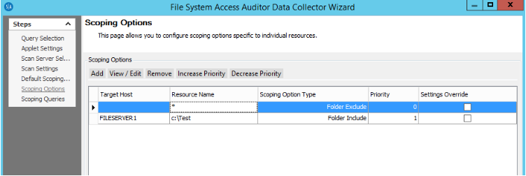
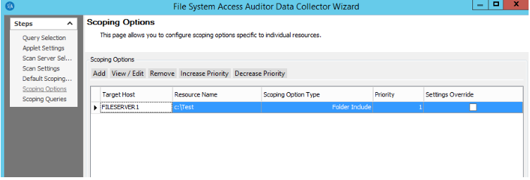

Summary: You've set up your scoping options to scan only specific folders (as folder includes), however the job still scans everything on your Share.
Issue: You've set up the scoping options to only scan a few folders, however you notice that scans are taking excessively long for only scanning a folder that doesn't have many sub folders or files in it. Upon scan completion or log inspection you've noticed that the scan has scanned the entire share and not honored the scoping settings.
Instructions:
Make sure that if you only want to scan a certain folder that you exclude everything
else. Just because you explicitly include a folder to be scanned doesn't automatically
exclude everything else (as was the case in versions prior to SA v9.0). Instead,
manually add the entry as a wild card (*) and make it a folder exclusion.
Example:
You want to scan folder c:\Test on FileServer1 and nothing else.
First add a global exclusion, and then add an explicit inclusion:

The following shows an ineffective direct folder inclusion.

Product:
StealthAUDIT
Module: SA
- DC - FSAA - Activity;SA - DC - FSAA - DFS;SA - DC - FSAA - Permissions;SA - DC - FSAA -
Sensitive Data
Versions:
SA 9.0
Dev Ticket:
24050 /SAFS-1621
Salesforce Article ID:
000002479